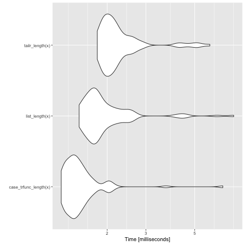
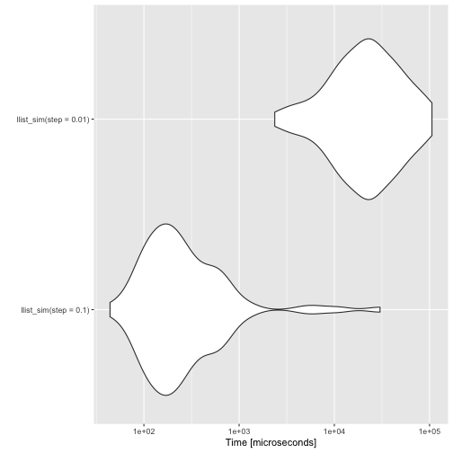
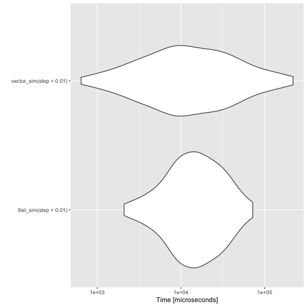
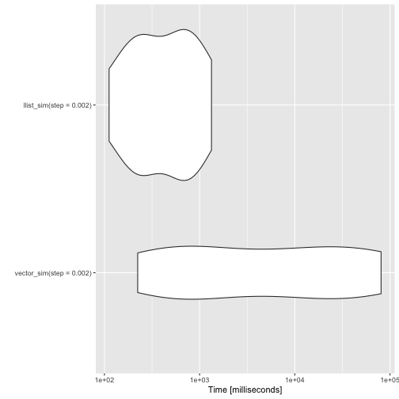

More Linked List Performance
I’m still working on improving the speed of my pattern matching DSL. I have improved the speed of constructors and pattern matching, so now I wanted to get back to comparing vectors and linked lists.
Merely building a vector of fixed size by concatenating them is a silly example, so I’m choosing a different one here. Consider a situation where you are simulating a random walk until you hit one of two absorbing states, e.g. zero or one. In such a setup you do not necessarily know how many states you will see. You can allocate a vector you think is longer than what you would see, but that is risky. If you did not allocate a vector that is long enough, your simulation would crash. If your simulations run for hours, then that sucks. So appending to a vector might be better.
To simulate a random walk until you reach zero or one, you can write a function such as this.
vector_sim <- function(start = 0.5, step) {
states <- c()
x <- start
while (0 < x && x < 1) {
states <- c(states, x)
x <- rnorm(1, x, step)
}
states
}If your simulations reach an absorbing state quickly, then it doesn’t take too long, but the quadratic running time (from copying vectors each time you concatenate) is costly as the walks get longer.
benchmarks <- microbenchmark::microbenchmark(
vector_sim(step = 0.1),
vector_sim(step = 0.01)
)
print(benchmarks, order = "mean", unit = "relative")## Unit: relative
## expr min lq mean median uq
## vector_sim(step = 0.1) 1.00000 1.0000 1.0000 1.0000 1.0000
## vector_sim(step = 0.01) 95.54576 167.4517 109.4056 303.3932 335.9709
## max neval
## 1.00000 100
## 23.52326 100
We can also implement the random walk using linked lists. Last time I looked at concatenation I only prepended to the list. To be fair to vectors, I also need to get the linked list in the right order. I can do that by reversing the list once the simulation is done.
Now, the construction of lists is costly compared to vector concatenation, but so is the pattern matching for reversing the list.
library(pmatch)
llist := NIL | CONS(car, cdr)
llreverse <- case_trfunc(
acc = NIL,
NIL -> acc,
CONS(car, cdr) -> Recall(cdr, CONS(car, acc))
)
llist_sim <- function(start = 0.5, step) {
states <- NIL
x <- start
while (0 < x && x < 1) {
states <- CONS(x, states)
x <- rnorm(1, x, step)
}
llreverse(states)
}I implemented a new function for this application, case_trfunc. It implements the tail-recursion optimisation. Without that, we run out of recursion stack when the lists get long. Compared to the tail-recursion implementation I wrote for tailr, this version is fast. The functions you can write using case_trfunc are very limited compared to general R functions, but so is functions you can create using case_func, so you do not lose much if you use it. You have to use Recall for the recursion. When case_trfunc builds a function, it doesn’t know what you will name it. In any case, using Recall is almost always a better idea if you can. That way, you can rename a function without modifying its body.
You can also use tailr to transform a tail recursive function into a loop. It is typically a little slower than the recursive version when you have sufficient stack space, though. The case_trfunc solution is faster.
vector_to_list <- function(vec) {
purrr::reduce_right(vec, ~ CONS(.y, .x), .init = NIL)
}
list_length <- case_func(
acc = 0,
NIL -> acc,
CONS(car, cdr) -> list_length(cdr, acc + 1)
)
tailr_length <- tailr::loop_transform(list_length)
case_trfunc_length <- case_trfunc(
acc = 0,
NIL -> acc,
CONS(car, cdr) -> Recall(cdr, acc + 1)
)
x <- vector_to_list(1:500)
bm <- microbenchmark::microbenchmark(
case_trfunc_length(x), list_length(x), tailr_length(x)
)
print(bm, order = "mean", unit = "relative")## Unit: relative
## expr min lq mean median uq
## case_trfunc_length(x) 1.000000 1.000000 1.000000 1.000000 1.000000
## list_length(x) 1.206286 1.239162 1.323586 1.248527 1.304409
## tailr_length(x) 1.458539 1.451368 1.514040 1.467512 1.501608
## max neval
## 1.0000000 100
## 1.1204718 100
## 0.8730039 100
autoplot(bm)
Back to the simulation example. The running time doesn’t grow as fast for the linked list implementation as it does for the vector implementation. Not surprisingly, since one is a linear time algorithm while the other is a quadratic time algorithm.
benchmarks <- microbenchmark::microbenchmark(
llist_sim(step = 0.1),
llist_sim(step = 0.01)
)
print(benchmarks, order = "mean", unit = "relative")## Unit: relative
## expr min lq mean median uq
## llist_sim(step = 0.1) 1.00000 1.00000 1.00000 1.0000 1.00000
## llist_sim(step = 0.01) 53.71984 87.15337 35.67568 110.4982 99.35948
## max neval
## 1.000000 100
## 3.510323 100
autoplot(benchmarks)
The vector solution is much faster than the linked list solution for short simulations, though. Unless I figure out a way to handle pattern matching in C, I won’t be able to compete with built-in functions.
benchmarks <- microbenchmark::microbenchmark(
llist_sim(step = 0.01),
vector_sim(step = 0.01)
)
print(benchmarks, order = "mean", unit = "relative")## Unit: relative
## expr min lq mean median uq
## llist_sim(step = 0.01) 3.265975 1.678061 0.7271456 1.314104 0.8033132
## vector_sim(step = 0.01) 1.000000 1.000000 1.0000000 1.000000 1.0000000
## max neval
## 0.3294592 100
## 1.0000000 100
autoplot(benchmarks)
For the linked lists to win, though, you have to increase the length of the simulations.
benchmarks <- microbenchmark::microbenchmark(
vector_sim(step = 0.002),
llist_sim(step = 0.002),
times = 10
)
print(benchmarks, order = "mean", unit = "relative")## Unit: relative
## expr min lq mean median uq
## llist_sim(step = 0.002) 1.00000 1.000000 1.00000 1.00000 1.00000
## vector_sim(step = 0.002) 1.99614 3.281817 40.59047 12.74987 40.11641
## max neval
## 1.00000 10
## 60.45374 10
autoplot(benchmarks)
I’m still not entirely satisfied with the pattern matching performance. To use it for algorithmic programming, it needs to be faster. It is never going to be as fast as implementing algorithms in Rcpp, but that is not what I am aiming for. I want to make it easier to implement data structures in pure R. That is, after all, easier than moving back and forward between C++ and R. Even if the Rcpp interface is exceptionally good for that.